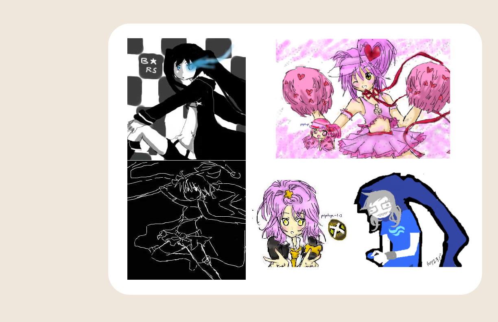
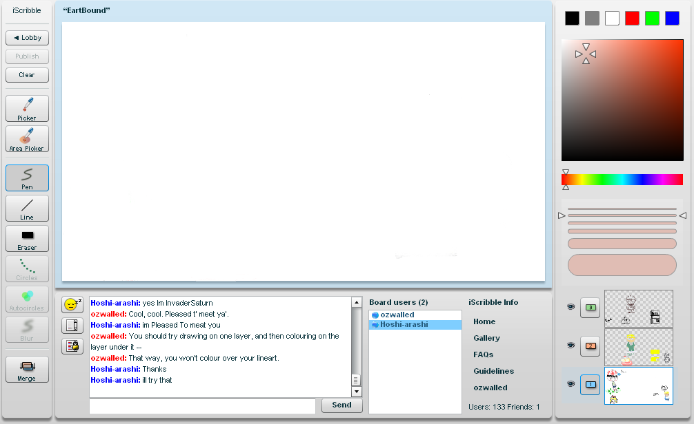

layer 1

layer 2

-

iScribble
2006-2018
iScribble was a collaborative website where people had the ability to chat and draw with others in real time, across the globe.
Private and public boards were accessible to people to visit and draw on, but private boards were exclusive to invites,so there was an incentive to make friends with others to be included in these spaces.
The site went offline in the fall of 2018, but is currently being renovated and rebranded.layer 3